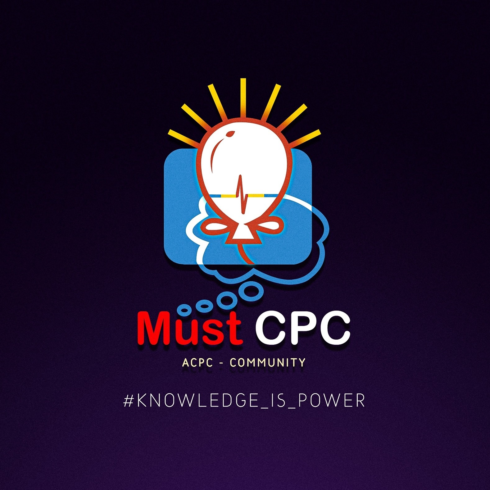

Position Overview
Institution: Must CPC Community
Duration: October 2023 - February 2024 (5 months)
Location: Egypt · Remote
Responsibilities
-
Mentoring and instructing trainees at levels 0, 1, and 2, providing
guidance in problem-solving, and fostering comprehension of data
structures and algorithms.
-
Conducting informative sessions on various competitive programming
topics.
-
Developing coaching strategies to enhance trainees' understanding
and application of programming concepts.
-
Leading team discussions and providing constructive feedback to help
trainees improve their skills.
Skills Developed
-
In-depth knowledge of competitive programming and problem-solving
techniques.
-
Ability to effectively mentor and guide individuals at different
skill levels.
-
Proficiency in explaining complex data structures and algorithms in
an understandable manner.
-
Experience in conducting educational sessions and leading team
discussions.